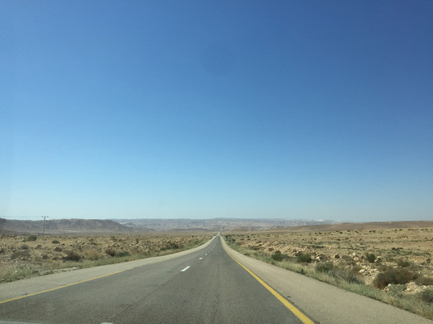
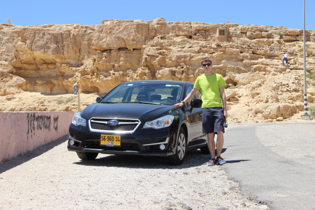

Правила дорожного движения в разных странах похожи, тем не менее в каждой есть свои особенности. Больше всего меня волновали вопросы связанные с ограничением скорости, парковками, платными магистралями и заправками.

Ограничение скорости является строгим и штраф выписывается за превышение указанного на знаке числа, т.е. нет запаса в 20 км / ч как в России. На форумах пугали обширным покрытием дорог камерами контроля скорости, поэтому первые несколько километров мы ехали по правилам, но поток дал понять, что принято двигаться быстрее. Вопрос с камерами контроля скорости для нас остался открытым, так как ни одного штрафа мы в итоге не получили.
Ограничение скорости в черте города 50 км / ч, за пределами от 70 до 90 км / ч и 100 - 110 на магистралях. Что было непривычно - это смена сигналов светофоров в городах. Я привык к мигающему зелёному, но на территории Израильских городов светофоры сразу загораются жёлтым.
Зоны парковки обозначены цветом бордюров. Серые - бесплатная, бело-голубые - платная, жёлтые и бело-красные - парковка запрещена. Опять же начитавшись отзывов я думал, что на бесплатные парковки можно попасть только чудом, но в итоге на протяжении всей поездки мы только на них и останавливались. Вероятно, причина в том, что мы катались на машине только по небольшим городам: в Иерусалиме и Тель-Авиве мы уже передвигались пешком, либо на общественном транспорте. В оживлённых местах парковки как правило платные, но в радиусе 500 м от них всегда находились места на бесплатных.
Платная магистраль в Израиле всего одна - Шоссе №6. Для меня было необычным, что на ней не нужно останавливаться, чтобы оплатить проезд: камеры распознают номера и выставляется счёт владельцу автомобиля. В нашем случае сумма была выставлена арендодателю, а он снял её с нашей карты.
Заправлялись мы всего два раза. В целом, когда сотрудники АЗС знают английский - проблем никаких, но первый раз мы заправлялись на пути из района крепости Масада в Эйлат на небольшой заправочной станции. Персонал был не израильской внешности - то ли арабы, то ли палестинцы и никто не знал английского. На пальцах удалось объяснить, сколько и какого топлива мы хотим купить, но без помощи парня заправляющегося на другой колонке я не смог понять, что алгоритм заправки следующий: подъезжаешь к колонке, оплачиваешь, лишь затем вставляешь пистолет в бак и заправляешь автомобиль. На второй заправке (Yellow) без проблем удалось произвести оплату с пистолетом в баке. Так и не понял в чём был подвох. Цены на бензин (95) европейские ~5 шекелей литр.
Машину мы арендовали в Hertz через Rentalcars. Бронировали Hyundai i20, но в итоге получили Subaru Impreza. 6 дней аренды стоили ~400$ с полным страховым покрытием. Сверх этого был сбор аэропорта в размере 28$ и, ввиду того, что страховку я брал не у Hertz, а у Rentalcars на карте была заблокирована сумма сравнимая со стоимостью аренды. Разблокировали её лишь через пару недель после возврата автомобиля.
В целом от вождения автомобиля в Израиле впечатления остались только положительные: дорожное покрытие хорошее, навигация прозрачная, участники движения уважают друг друга.
